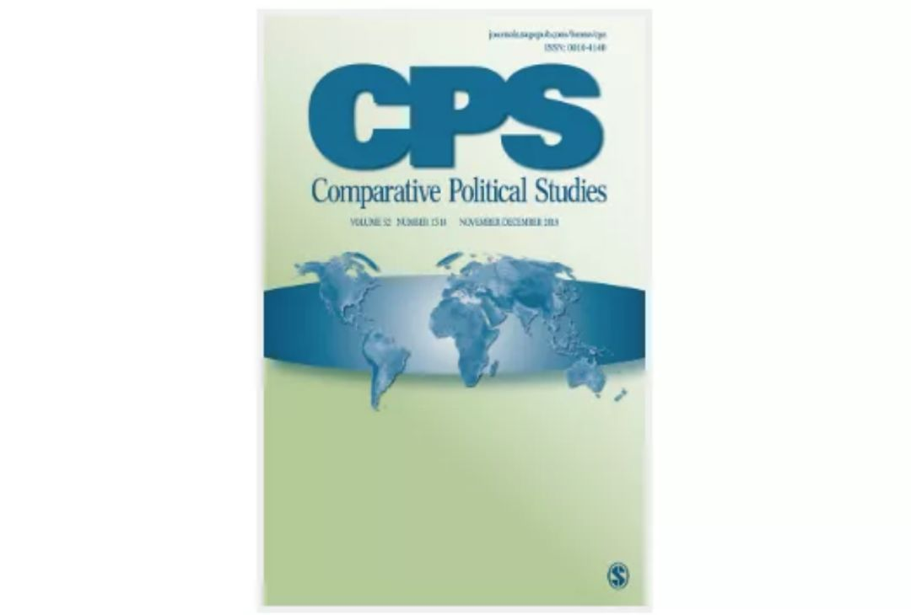

收录于合集
期刊简介： 《比较政治研究》（Comparative Political Studies）杂志一年出版14期，是从事跨国和国内比较政治研究的专业杂志，它致力于在前沿方法、理论和实证研究等领域进行深度分析，其过去5年的影响因子为4.262 在176个政治科学类期刊中排名第12位。
编者按： 摘要编译主要由各高校在读硕士生和博士生自愿组织进行。受学生学识及翻译水平所限，译文可能有诸多不当之处，还望读者们见宥，也欢迎留言讨论。因为版权所限，需要阅读原文的读者请通过所在学校的图书馆数据库下载。
期刊目录
1. The Lay of the Land: Information Capacity and the Modern State
2. The Authoritarian Wager: Political Action and the Sudden Collapse of Repression
3. The Lesser Evil? Corruption Voting and the Importance of Clean Alternatives
4. Are We All Amazon Primed? Consumers and the Politics of Platform Power
5. Rethinking Democratic Diffusion: Bringing Regime Type Back In

1. 认清实际情况：信息能力和现代国家
题目： The Lay of the Land: Information Capacity and the Modern State
作者： Thomas Brambor，纽约大学政治学系讲师；Agustín Goenaga，隆德大学政治学系研究员；Johannes Lindvall，隆德大学政治学系教授；Jan Teorell，隆德大学政治学系教授。
摘要： 本文为国家在收集和处理关于其自身、领土和人口信息的成效方面提供了新的材料。作者汇编了关于五项制度和政策的数据：可靠人口普查的定期执行，统计年鉴的定期出版，民事和人口注册系统的引进以及专门处理统计信息的政府部门的建立。使用项目反应理论的方法，作者为85个国家构建了一个从1789年至今的信息能力指数。作者还探讨了随着时间的发展，政体变迁如何影响着信息能力的发展。与关注民主和财税能力的文献不同，作者发现选举权的扩展往往与更高的信息能力相关，但是政治竞争水平的增加与信息能力却并不存在这种关系。这些发现说明了这一新测量方法的价值，因为它们表明国家能力的不同要素是被不同历史进程所塑造的。
This article presents new evidence on the efforts of states to collect and process information about themselves, their territories, and their populations. We compile data on five institutions and policies: the regular implementation of a reliable census, the regular release of statistical yearbooks, the introduction of civil and population registers, and the establishment of a government agency tasked with processing statistical information. Using item response theory methods, we generate an index of “information capacity” for 85 states from 1789 to the present. We then ask how political regime changes have influenced the development of information capacity over time. In contrast with the literature on democracy and fiscal capacity, we find that suffrage expansions are associated with higher information capacity, but increases in the level of political competition are not. These findings demonstrate the value of our new measure, because they suggest that different elements of state capacity are shaped by different historical processes.
2. 威权主义者的赌博：
政治行动和镇压的骤然崩溃
题目： The Authoritarian Wager: Political Action and the Sudden Collapse of Repression
作者： Branislav L. Slantchev，加州大学圣地亚哥分校政治学系教授；Kelly S. Matush，德州理工大学政治学系助理教授。
摘要： 威权统治者倾向于阻止政治行动，但有时也会允许某些政治行动，即使这些行动会导致社会冲突。当统治者拥有可靠的安全部队来阻止抗议活动时，预防性镇压的崩溃尤其令人困惑。作者提出了一个博弈论模型来探究威权主义者镇压或允许政治争论的动机。作者指出，有能力完全压制政治行动的统治者会建立专制政权，但能力较弱的统治者可能会选择允许公开的争论。有利于政权支持者的现状偏见削弱了他们捍卫公开争论的动机。统治者以威权主义政权为赌注，放弃预防性的镇压和容许威胁现状的反对派的存在，由此产生的风险促使支持者们捍卫威权主义政权，增加了统治者的政治生存机会。在镇压的结构性能力方面，即使是微弱的变化也可能导致关于镇压政策的重大逆转。
Authoritarian rulers tend to prevent political action, but sometimes allow it even if it leads to social conflict. The collapse of preventive repression is especially puzzling when rulers have reliable security forces capable of preventing protests. We develop a game-theoretic model that explores the incentives of authoritarians to repress or permit political contestation. We show that rulers with the capacity to fully repress political action create despotic regimes, but rulers with more moderate capacity might opt to allow open contestation. The status quo bias that favors regime supporters weakens their incentive to defend it. Rulers take the authoritarian wager by abandoning preventive repression and allowing opposition that threatens the status quo. The resulting risk gives incentives to the supporters to defend the regime, increasing the rulers’ chances of political survival. Even moderate changes in the structural capacity to repress might result in drastic policy reversals involving repression.
3. 更少的罪恶？
导致腐败的选举和廉洁候选人的重要性
题目： The Lesser Evil? Corruption Voting and the Importance of Clean Alternatives
作者： Mattias Agerberg，哥德堡大学政治学系博士。
摘要： 调查表明，世界各地居民都对腐败深恶痛绝；同时，与民主理论相悖的是，涉及滥用公权最为明显的政治家往往能持续获得选民的支持。利用在西班牙开展的实地调查实验，本文探讨了这一悖论在过去未被充分研究的方面：可选且廉洁的政治候选人的重要性。调查结果表明，当廉洁的政治候选人存在时，哪怕涉及腐败的候选人在其他方面表现得十分有吸引力，选民仍然会对政治腐败进行惩罚。然而，当候选人都涉及腐败时，即便存在一个“弃权”选项，选民容忍腐败候选人的可能性仍然会更高。作者讨论了这些结果如何帮助我们理解选出腐败候选人的投票，以及为什么有些社会可能会陷入高腐败平衡的陷阱之中。
Surveys show that citizens in all parts of the world have a strong distaste for corruption. At the same time, and contrary to the predictions of democratic theory, politicians involved in the most glaring abuse of public office often continue to receive electoral support. Using an original survey experiment conducted in Spain, this article explores a previously understudied aspect of this apparent paradox: the importance of viable and clean political alternatives. The results suggest that voters do punish political corruption when a clean alternative exists, even when the corrupt candidate is very appealing in other respects. However, when only given corrupt alternatives, respondents become much more likely to tolerate a candidate accused of corruption—even when given a convenient “no-choice” option. I discuss how these results can help us understand corruption voting and why some societies seem to be stuck in a high-corruption equilibrium.
4. 我们都是亚马逊Prime会员吗？
消费者和平台权力的政治
题目： Are We All Amazon Primed? Consumers and the Politics of Platform Power
作者： Pepper D. Culpepper，牛津大学布拉瓦尼克政府学院教授；Kathleen Thelen，麻省理工学院政治学教授。
摘要： 本文阐明了科技公司政治影响的一个独特来源，那就是被我们称为“平台权力”（Platform Power）的东西。平台权力存在于有一定经济规模的公司，它们提供众多消费者获取商品、服务和信息所依赖的渠道。有平台权力的公司会从决策者的差别对待中获益，但这种差别并不是游说和竞选献金的效用函数，也不来自撤资的威胁。有平台权力的公司是从消费者隐性忠诚中获益的，因为消费者能够对不利于这些公司的规章制度产生强大的反对力量。在解释富裕的民主国家中这些平台公司的权力运行时，关注消费者所扮演的重要角色，也有助于我们发现它们特有的弱点。这些弱点来自那些使消费者- 平台的同盟破裂的事件，或提示了“公民”而非“消费者”的政治身份的事件。
This article articulates a distinctive source of political influence of some technology firms, which we call platform power. Platform power inheres in companies of economic scale that provide the terms of access through which large numbers of consumers access goods, services, and information. Firms with platform power benefit from a deference from policymakers, but this deference is not primarily a function of direct influence through lobbying or campaign contributions, nor does it come from the threat of disinvestment. Companies with platform power instead benefit from the tacit allegiance of consumers, who can prove a formidable source of opposition to regulations that threaten these platforms. Focusing on the critical role played by consumers in explaining the powers platform firms wield in the rich democracies lends insight as well into their distinctive vulnerabilities, which flow from events that split the consumer–platform alliance or that cue citizen, as opposed to consumer, political identities.
5. 重思民主的扩散：把政体类型带回来
题目： Rethinking Democratic Diffusion: Bringing Regime Type Back In
作者简介： Edward Golding，密苏里大学政治学系博士候选人；Sheena Chestnut Greitens，密苏里大学政治学系助理教授。
摘要： 对民主扩散的研究经常强调地缘位置毗邻的重要性：当一个国家或地区发生民主化时，其将更可能带动周边的国家或地区发生民主化。本文指出，这些研究忽视了政权类型的影响；威权政体的垮台和随之发生的民主化经常沿着类型相似的政权网络散布开来。政权的类型影响了其面对大众挑战时的脆弱程度，而政权的相似性又增加了民众通过抗议手段来反对相似政权的有效性。本文在立足个案分析的基础上提出了这一理论，并借助量化方法和样本外案例对其进行检验。本文发现，政权的相似性更容易导致威权政体的垮台和民主的扩散，包括政权相似性显著地减小了地缘上毗邻的影响，尽管地缘上的邻近会增强政权的相似性。在此政体类型基础上重思民主的扩散，需要修正传统理论中威权政体垮台和民主转型的国际影响。
Studies of democratic diffusion often emphasize geographic proximity: democratization in a country or region makes democratization nearby more likely. We argue that regime type has been underappreciated; authoritarian breakdown and democratization often diffuse along networks of similar regimes. A regime’s type affects its vulnerability to popular challenge, and regime similarity increases the likelihood that protest strategies developed against one regime are effective against similar regimes. We employ a qualitative case study to generate our theory, then test it quantitatively and with out-of- sample cases. We find that regime similarity strongly predicts autocratic breakdown and democratic diffusion, making both outcomes more likely. Including regime similarity significantly reduces the effect of geographic proximity, although geographic proximity may increase the effect of regime similarity. Reinterpreting democratic diffusion as a regime-type phenomenon calls for revision to conventional wisdom on the role of international factors in authoritarian breakdown and democratization.
编译/审校：康张城 施榕 殷昊 杨端程 赵德昊 吴温泉
编辑：郭静远
【政文观止Poliview】系头条号签约作者